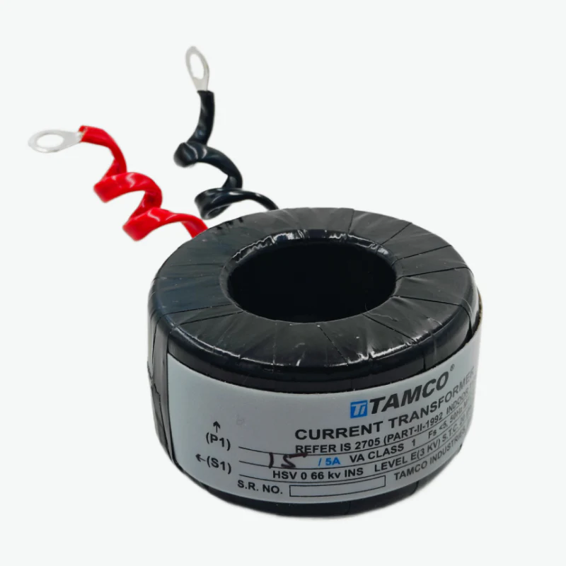
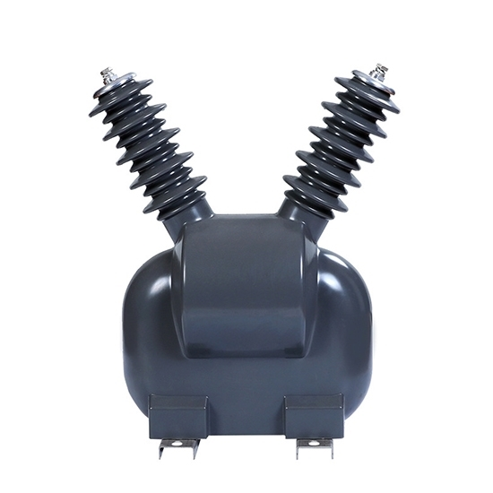
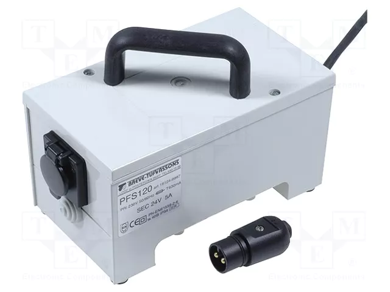
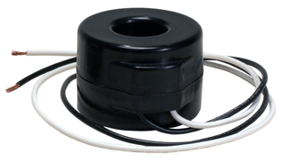

Welcome to ElectroSpecs | Explore Electronics Components | Learn & Build 🚀

CURRENT TRANSFORMER

POTENTIAL TRANSFORMER
CAPACITIVE VOLTAGE TRANSFORMER

PROTECTIVE TRANSFORMER

METERING INSTRUMENT TRANSFORMER